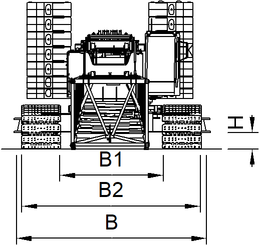

Übersicht des Grundgeräts
Benennung | Wert | |
|---|---|---|
L | Länge des Grundgeräts |
10205 mm 33.48 ft |
B | Breite des Grundgeräts |
7000 mm 22.97 ft |
H | Höhe des Grundgeräts mit maximalem Heckballast |
4610 mm 15.12 ft |
L1 | Länge des Oberwagens mit Heckballast |
9275 mm 30.43 ft |
L2 | Abstand zwischen Drehachse und Vorderkante der Kabine |
3450 mm 11.32 ft |
L3 | Abstand zwischen Drehachse und Anlenkpunkten des Hauptausleger-Anlenkstücks |
1500 mm 4.92 ft |
L4 | Abstand zwischen Drehachse und Mitte des Fahrantriebs |
3740 mm 12.27 ft |
L5 | Abstand zwischen Mitte des Leitrads und Mitte des Fahrantriebs |
7540 mm 24.74 ft |
L6 | Länge der Raupenträger |
8700 mm 28.54 ft |
L7 | Abstand zwischen Hinterkante der Raupenträger und Hinterkante des Heckballasts |
1505 mm 4.94 ft |
B1 | Breite des Heckballasts |
6050 mm 19.85 ft |
B2 | Breite der Bodenplatten |
1200 mm 3.94 ft |
H1 | Höhe der Anlenkpunkte des Hauptausleger-Anlenkstücks |
2000 mm 6.56 ft |
H2 | Bodenfreiheit des Heckballasts |
1450 mm 4.76 ft |
H3 | Bodenfreiheit des Unterwagens |
535 mm 1.76 ft |
H4 | Höhe der Raupenträger |
1345 mm 4.41 ft |
R | Schwenkradius des A-Bock1 |
8710 mm 28.58 ft |
R1 | Schwenkradius des Heckballasts |
6200 mm 20.34 ft |
Technische Daten - Grundgerät

Fig. 22: Abmessungen - Grundgerät mit schmaler Spur
Fig. 22: Abmessungen - Grundgerät mit schmaler Spur
Benennung | Wert | |
|---|---|---|
B | Breite des Unterwagens |
6100 mm 20.01 ft |
H | Bodenfreiheit des Unterwagens |
520 mm 1.71 ft |
B1 | Breite der Innenkanten der Bodenplatten bei schmaler Spur |
3400 mm 11.15 ft |
B2 | Breite der Außenkanten der Bodenplatten bei schmaler Spur |
5800 mm 19.03 ft |
Technische Daten - Grundgerät mit schmaler Spur
Benennung | Wert | |
|---|---|---|
L | Länge des Grundgeräts in Transportposition |
11080 mm 36.35 ft |
B | Breite des Grundgeräts in Transportposition |
2985 mm 9.79 ft |
H | Höhe des Grundgeräts in Transportposition |
3290 mm 10.79 ft |
B1 | Breite zwischen Abstützplatten |
2785 mm 9.14 ft |
H1 | Bodenfreiheit des Grundgeräts |
975 mm 3.2 ft |
Bodenfreiheit des Grundgeräts mit Teleskop-Abstützzylindern |
1425 mm 4.68 ft | |
Technische Daten - Grundgerät in Transportposition auf Abstützzylindern